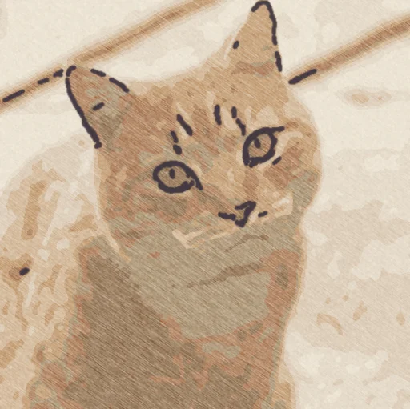
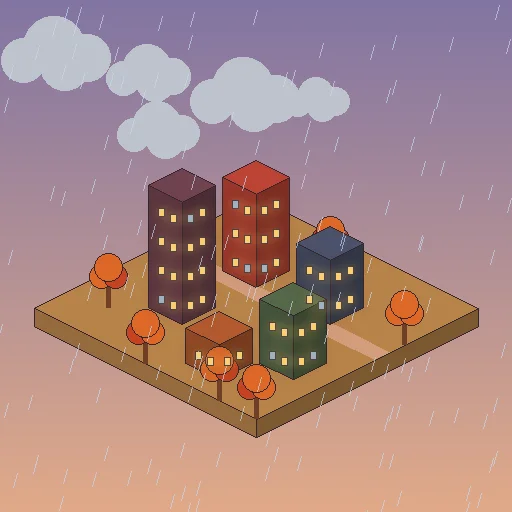
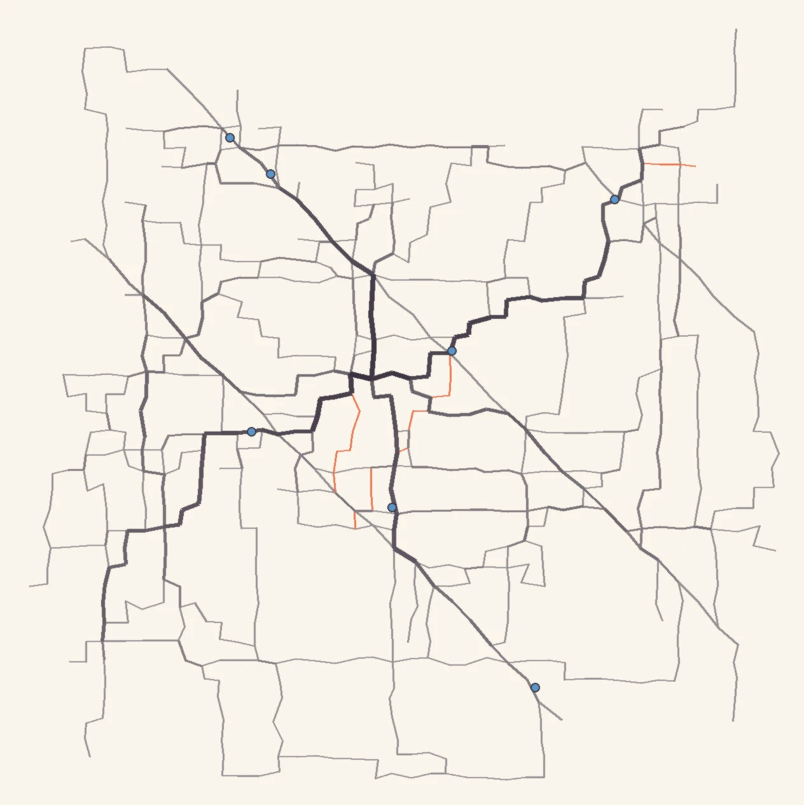
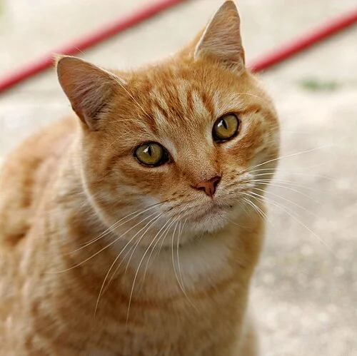
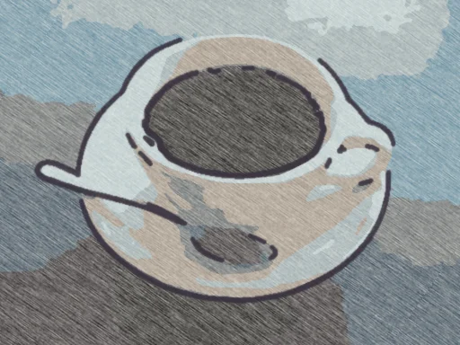
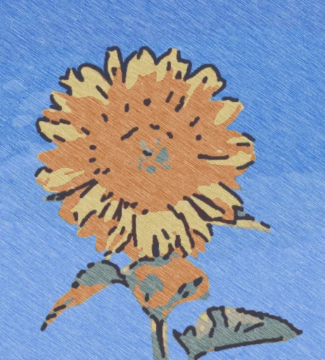
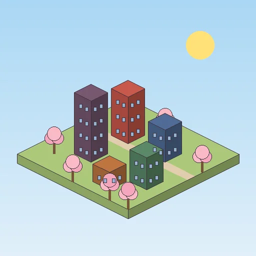
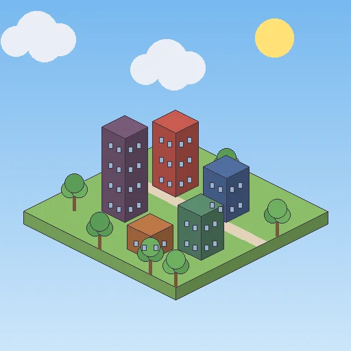
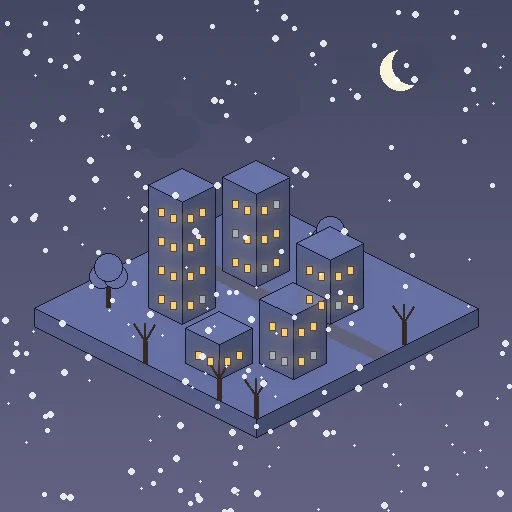

Snap one photo a day and it becomes a crayon doodle in a tiny town that shows the real weather. Walk, and only the streets you've walked appear on your map. Years later, your days come back to you.
iPhone first. No account, no ads in your diary. Your data stays in your iCloud.

Your photo is redrawn on your phone in crayon, pencil or watercolor. It takes a second, and the photo never leaves your phone.

Each day lives in a little town that shows that day's real weather, light and season.

Streets appear on your map as you walk them, and the ones you walk often get darker. New roads glow orange.
Made on your phone with no cloud AI, so it's free and private.



8 kinds of weather × 6 times of day × 4 seasons. Your widget changes as the day goes on.


